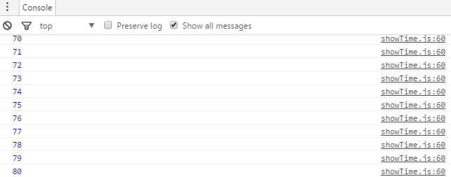
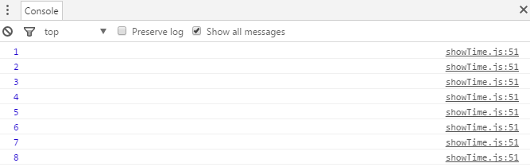

函数节流
实际问题
最近看到一些公司的官网有很精美的返回首页/顶部之类的图标，就想给自己的网站也实现一下这样的功能。主要思想是添加一个onscroll监听函数，当网页被卷起的高度document.body.scrollTop || document.documentElement.scrollTop( IE7 )大于网页可见区域高document.body.clientHeight时，就显示返回首页/顶部，否则不显示。思想很简单，于是我火速写出了下面的代码：
var n = 0;
var availHeight = window.screen.availHeight;
window.onscroll = function(){
var scrollTop = document.body.scrollTop || document.documentElement.scrollTop;
console.log(++n);
if(scrollTop > availHeight) {
$("#backToTopLink").show();
} else {
$("#backToTopLink").hide();
}
};
调试一下，功能已经可以实现了，一切似乎都很完美。这时我去看了一下控制台输出：
没错，两个简单的鼠标滚轮让我的onscroll监听函数执行了80次。这完全超出了我的预期。如果我的代码很复杂，要是简单的两次鼠标滚轮就要调用80次这还了得。
函数节流
onscroll是只要鼠标滚动就重复触发的，具体频率我也不清楚，反正肯定不小。类似的还有鼠标的mousemove事件，都是短时间内重复触发。
在《JavaScript高级程序设计》第22章有专门的方法对函数节流。
function throtte(method,context){
clearTimeout(method.tId);
method.tId = setTimeout(function(){
method.call(context);
},100);
}
原理很简单，利用一个定时器，让函数延迟100秒执行。如果100秒内捕捉到事件，函数不会执行。在本次函数执行完后，清零计时器，重新开始计时。这样的话，我的代码可以改成：
var n = 0;
function showBackToTop(){
console.log(++n);
var scrollTop = document.body.scrollTop || document.documentElement.scrollTop;
if(scrollTop > availHeight) {
$("#backToTopLink").show();
} else {
$("#backToTopLink").hide();
}
}
window.onscroll = function(){
throtte(showBackToTop);
};
看一下控制台，同样的两个鼠标滚轮，函数只执行了8次，只有原来的十分之一。现在终于可以放心地使用这个鼠标滚轮事件了。
函数去抖
在查找函数节流的资料时，还看到了函数去抖。也就是说在最后一次触发某个事件后一段时间，函数会且一定会执行。比如类似百度首页输入自动提示一样的东西，在text上绑定keyup事件，每次键盘弹起的时候自动提示，但是又不想提示那么频繁，于是会想到上面的方法，但是悲剧了，只有停止输入等100毫秒才会提示，在输入过程中根本就没有提示。这样只有停下来的时候才会提示，这就没意义了。
能不能在函数节流的基础上间隔固定时间就执行一次？
当然可以！
function throttle(method,delay,duration){
var timer=null, begin=new Date();
return function(){
var context=this, args=arguments, current=new Date();
clearTimeout(timer);
if(current-begin>=duration){
method.apply(context,args);
begin=current;
}else{
timer=setTimeout(function(){
method.apply(context,args);
},delay);
}
}
}
以上代码是的该函数只有在上一次执行完的delay时间后才会执行，而且固定duration时间就会执行一次。使得事件既不会频繁执行也没有就最后执行。